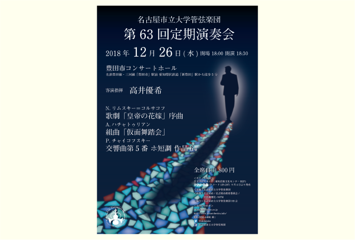
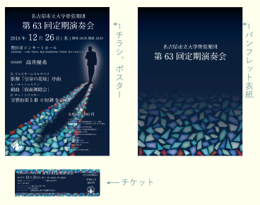

名古屋市立大学管弦楽団第63回定期演奏会

- 制作期間
- 担当範囲
- 使用言語・ツール
2018.8-2018.10
チラシ、ポスター、チケット、パンフレットの表紙と中の一部
Illustrator / Photoshop
- 制作背景

自分の所属する管弦楽団の定期演奏会における印刷物のデザインをしました。
必要な情報を載せることやそれぞれのサイズ以外は特に決まりがないので演奏会のプログラムに合わせて自由に作っています。
今回の演奏会で演奏する曲はどれもどちらかというと重め・暗めの曲だったのでその雰囲気を大事にしつつ、メイン曲であるチャイコフスキーの交響曲第5番をイメージしています。
チャイコフスキーの交響曲第5番では全曲を通して「運命」の主題が用いられていて、その逃れられない「運命」を影に置き換え、歩いても歩いても付いてくる影と後ろを気にして振り返ろうとする主人公、そしてどこまで続くのかわからない道をモチーフにまずはチラシとポスターのデザインをしました。

チラシ・ポスターで作ったものをから発展させてその他の印刷物もデザインしていきました。
チケットと次回演奏会のお知らせのポスターは道のモチーフを使ったものにしました。
パンフレットは開場後お客さんの手に渡るので主人公の視点から見える足元だったり道の始まりの地点をイメージして作りました。
アンコール曲のポスターはお客さんがホールを出た後に目にするものなので、交響曲第5番の、この演奏会のその先をイメージして作りました。